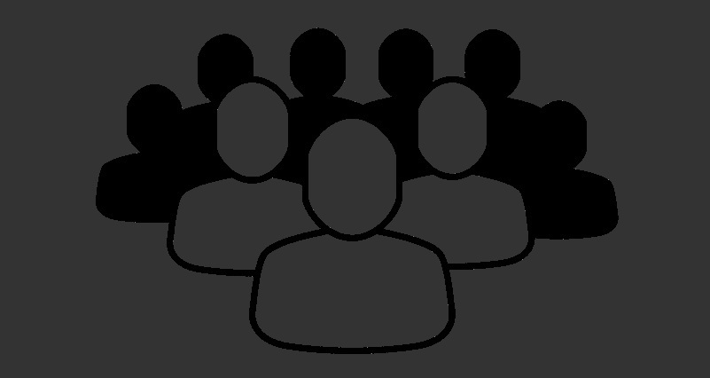

-

Student
Developer
Leader
SEAN HEFFERNAN
Project Manager and Full-Stack Developer
-
Profile
Looking for internships and co-ops 2021
I am a student studying Computer Science and Information Technology/Web Science at Rensselaer Polytechnic Institute in Troy NY. As a programmer, I have experience as a full-stack developer focusing primarily on back-end work, working with both the MEAN and AMP stack. As a leader, I have worked as both a Project Manager as well as a mentor for inexperienced students entering the field. I am currently looking for internship and co-op opportunities in the Spring and Summer of 2021 to further develop my skills as a software developer and leader. -
Education
 I am currently an undergraduate at Rensselaer Poytechnic Institute, dual majoring in Computer Science and Information Technology/Web Science, looking to concentrate in Systems and Software and Web Technologies respectively.
I am currently an undergraduate at Rensselaer Poytechnic Institute, dual majoring in Computer Science and Information Technology/Web Science, looking to concentrate in Systems and Software and Web Technologies respectively.
Current GPA: 3.73
Estimated Time of Graduation: Spring 2022Notable Coursework
Data Structures
Primary Language: C++
Developed strong problem solving skills by constructing complete C++ programs based around real-world problems.
Analyzed the performance of algorithms and data structures, allowing for the designing of efficient customized data structures.
Computer OrganizationPrimary Languages: C & Assembly
Learned the Assembly Language, including instruction formats, instruction types, flow of control, and the assembly process.
Applied concepts of multi-cycle and pipelined data path and control to design more efficient programs
Heavy emphasis on systems and low-level programming, including digital logic such as Boolean algebra, logic circuits, and gates.Foundations of Computer ScienceCourse about discrete mathematics and computation theory.
Formulated mathematical proofs by using logic and the application of mathematical tools such as induction and recursion.
Calculated combinational arguments and developed formal methods of computation.Introduction to AlgorithmsAnalyzed the runtime and efficiency of different algorithms.
Utilized different algorithm-design techniques, including, but not limited to, greedy, divide-and-conquer, and dynamic programming techniques, in order to solve particular problems.
Modeled real problems abstractly using the language of graphs and flows.
Solved problems by reducing to other problems whose solutions are known, as well as show that problems are hard by reducing from other problems.
Introduction to Information Technology and Web SciencePrimary Languages: HTML5, CSS3, JavaScript, AMP Stack
Analyzed business cases and gained the ability to describe important technologies important to the Information Technology Profession along with major applications in the field of Computer and Web Science.
Learned and applied the basic concepts of front-end and back-end development, allowing for the creation of simple web pages and databases.
Web Systems DevelopmentPrimary Languages: HTML5, CSS3, JavaScript, AMP Stack
Refined my knowledge of front-end and back-end development, allowing for the creation of more sophisticated advanced web applications.
Learned about the World Wide Web and HTTP requests, allowing for web applications to communicate and retrieve data from servers.
Worked over the course of a semester in a team of five in order to develop a detailed web application in the AMP stack.
Web Science Systems DevelopmentPrimary Languages: HTML5, CSS3, JavaScript, MEAN Stack
A continuation from Web Systems Development, this course introduced the MEAN stack, frameworks, and other components of a web appplication, such as APIs.
Explored methodology such as application design, software versioning, and team development.
Worked in a team of six in order to develop a web application in the MEAN stack which could theoretically be advanced enough to be sold as a product.Information DesignExamined graphical representation data in order to analyze and discuss how and why graphics were created the way they were.
Observed visual presentations of historical data to determine the most efficient ways to represent the complex information being displayed without distorting the data within.
Viewed ways in which information designers can push certain messages across that would otherwise be unclear with different design choices.
Designed four personal designs from data both personal and external, presenting them using methods and graphs discussed in class.Notable Extracurriculars
Web Technologies Group
I am a member of RPI's Web Technologies Group, a Student Senate Committee creating and maintaining tech applications which aim to serve the students of RPI. Some of the projects we work on include the campus Shuttle Tracker, Senate Survey, and Petitions site. One notable accomplishment this past Spring was setting up a TV display in RPI's Student Union for the Shuttle Tracker to be displayed 24/7.
webtech.union.rpi.eduRensselaer Center for Open Source (RCOS)
I have worked as both a developer and mentor for RCOS, RPI's open source community. As a mentor, I provide guidance for both new and old RCOS students as well as grade their contributions to the team they are a part of. I am currently one of two Project Managers for RCOS's Shuttle Tracker team and will continue managing the team in the Fall.
rcos.io
Accomplishments
- Rensselaer Leadership Award
- Given in recognition of an outstanding record of academic and personal achievements, a strong commitment to excellence, and illustration of intellectual curiosity.
Awarded throughout 2018 and 2019. - Dean's Honor List
- Recognizes students who attain a grade point average of 3.50 or better and have no grade below C.
Awarded throughout 2019.
Other Activities
Aside from my academic activities, I am also on RPI's water polo team. A New York Division III Club team, we attend 3-4 tournaments in the Fall semester and compete with teams such as West Point, Columbia, and Cornell. Furthermore, I am a member of the Japanese Culture Association, a club dedicated to exploring Japanese culture including holidays, desserts, and education.
-
Skills
Programming Languages
- C
- C++
- HTML5
- CSS3
- JavaScript
- TypeScript
- PHP
Technologies
- jQuery
- Bootstrap
- Apache
- MySQL
- SQL
- PhpMyAdmin
- MongoDB
- Mongoose
- Express.js
- AngularJS
- Node.js
- Vue.js
- npm
Documentation & Design
- Microsoft Office
- Google Drive
- Tableau Desktop
- Git
- GitHub
- Sourcetree
- Sublime Text
- Visual Studio Code
- LaTeX
-
Projects
Over the course of my time at RPI, I have worked on a multitude of projects honing my skills as both a developer and leader. These range from weekly assignments to semester long applications, to purely personal projects.
Collude.it
A web chat service written using the AMP Stack, Collude.it was my term project for Web Systems Development in the Fall of 2019. Built with small team communication in mind, Collude.it allows for scheduling of in person meetings, group preference management, and quick communication via chat rooms. I worked as a back-end and middle-end developer on this project, helping to build the database via MySQL as well as integrate all the backend functionality into the frontend.
RepositoryDegreezy
Degreezy was my term project for Web Science Systems Development in the Spring of 2020. Utilizing the MEAN Stack, Degreezy is a degree progress viewer as well as scheduler aimed at helping RPI students plan their four years in college. While it is certainly uncommon for students to come into a school with a set plan, Degreezy aims to make it easier for students to make changes later in their college career. Degreezy's features include a fully functional API, semester scheduler, and progress viewer which notifies you if you are on track to graduate. For this project, I worked as a back-end developer creating the database schema and API endpoints.
RepositoryShuttle Tracker
Throughout my two semesters in RCOS so far, I have worked on WTG's Shuttle Tracker, a web application designed for tracking the shuttles which go around RPI's campus. During my first semester in RCOS in Fall 2019, I worked as a back-end developer, creating an endpoint for ETAs as well as a front-end display for ETAs which will eventually replace the current shuttle schedules. In Spring 2020, I became the Project Manager for Shuttle Tracker as well as a mentor for RCOS, and prioritized helping other members of the team, providing guidance and assistance where necessary. Some features we implemented this semester include a new dark mode feature and better admin tools to more easily update the application with up to date data. Shuttle Tracker is primarily written in Go and TypeScript, utilizing PostgreSql as it's database management system.
Repository